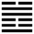

Trạch Lôi Tùy (隨 suí)
Thoán từ:
隨: 元, 亨, 利, 貞, 无咎．
Tùy: Nguyên, hanh, lợi, trinh, vô cữu.
Dịch: Theo nhau: rất hanh thông, nhưng phải theo điều chính đáng, vì điều chính đáng (trinh) mới có lợi, không có lỗi.
Giảng: Đoài ở trên là vui vẻ, Chấn ở dưới là động; đó là cái tượng hành động mà được người vui theo.
Lại có thể Giảng: Chấn là sấm, Đoài là chằm, sấm động ở trong chằm, nước chằm theo tiếng sấm mà cũng động, cho nên gọi là tùy.
Lời thoán từ quẻ này chỉ khác lời Thoán từ quẻ Càn vì có thêm hai chữ “vô cữu” (không có lỗi) ở sau, mà nghĩa thay đổi hẳn. Chúng tôi dịch như trên là theo Chu Hi: nguyên hanh (rất hanh thông) là “đức” (tính cách) của Tùy; còn trinh (chính đáng) là điều kiện để cho Tùy có lợi mà không có lỗi.
Phan Bội Châu hiểu hơi khác: cả nguyên, hanh, lợi, trinh đều là điều kiện để “Tùy” có lợi mà không có lỗi. Theo người nhưng phải theo cái hay, theo đạo ; người có rất thiện (nguyên), việc có thông thuận (hanh), có cái lợi công (lợi), thì mới nên theo, và khi theo thì phải giữ tiết tháo (trinh) thì mới không có lỗi.
Đại khái ba cách hiểu đó cũng không khác nhau mấy. Mà quẻ Tùy so với quẻ Càn thì kém xa.
Thoán truyện bàn rộng thêm, đưa một điều kiện nữa: Theo mà phải đúng thời mới được. Ví dụ thời Hán, Vương Mãng cũng đã muốn làm một cuộc cách mạng xã hội; rất công bằng, tốt; nhưng thời đó sớm qua, nên thất bại. Tới đời Tống, Vương an Thạch cũng thất bại, như vậy là không hợp thời. Và Thoán truyện nhấn mạnh vào cái nghĩa tùy thời đó. (Tùy thời chi nghĩa đại hĩ tai!)
Ý nghĩa các hào :;
1.
初九: 官有渝, 貞吉, 出門交有功．
Sơ cửu: Quan hữu du, trinh cát, xuất môn giao hữu công.
Dịch: Hào 1, dương : chủ trương thay đổi, hễ chính thì tốt, ra ngoài giao thiệp thì có công.
Giảng: chữ “quan” ở đây có nghĩa là chủ, chữ “du” có nghĩa là thay đổi. Chu Hi hiểu là chủ trương thay đổi. Phan Bội Châu hiểu là cái thể của mình thay đổi, vì hào 1 là dương đáng lẽ làm chủ hai hào âm ở trên, nhưng ngược lại phải tùy hai hào đó (vì hào dương ở dưới cùng).
Hiểu theo cách nào thì vẫn : cứ chính đáng, theo lẽ phải, thì tốt (trinh cát). Đừng theo tư tình, mà theo người ngoài (xuất môn) nếu họ phải, thì thành công.
2.
六二: 係小子, 失丈夫．
Lục nhị: Hệ tiểu tử, thất trượng phu.
Dịch: Hào 2, âm: Ràng buộc với kẻ thấp kém (nguyên văn là : con nít) mà mất kẻ trượng phu.
Giảng: Hào này âm nhu,không biết giữ mình, gần đâu tùy đấy, nên ràng buộc với hào 1 dương (tiểu tử), mà bỏ mất hào 5 cũng dương, ở trên, ứng hợp với nó.
Quẻ này, hễ là hào âm thì không dùng chữ tùy là theo, mà dùng chữ hệ là ràng buộc, có ý cho rằng âm nhu thì vì tư tình, hoặc lợi lộc mà quấn quít, còn dương cương thì vì chính nghĩa mà theo.
3.
六三: 係丈夫, 失小子; 隨有求得, 利居貞．
Lục tam: Hệ trượng phu, thất tiểu tử;
Tùy hữu cầu đắc, lợi cư trinh.
Dịch: Hào 3, âm: Ràng buộc với trượng phu, bỏ kẻ thấp kém; theo như vậy cầu xin cái gì thì đựơc đấy, nhưng phải chính đáng mới có lợi.
Giảng: Hào này cũng âm nhu như hào 2, gần đầu thân cận đấy, cho nên thân với hào 4 dương cương, có địa vị ở trên (tức với trượng phu) mà bỏ hào 1 (tiểu tử). Nó xin 4 cái gì cũng được vì 4 hơi có thế lực; nhưng Hào từ khuyên đừng xu thế trục lợi, phải giữ tư cách chính đáng thì mới tốt.
4.
九四: 隨有獲, 貞凶．有孚, 在道, 以明何咎．
Cửu tứ: Tùy hữu hoạch, trinh, hung.
Hữu phu, tại đạo, dĩ minh hà cữu.
Dịch: Hào 4, dương : Theo thì thu hoạch được lớn đấy, nhưng dù lẽ vẫn ngay mà cũng có thể gặp hung được. Cứ giữ lòng chí thành, theo đạo lý, lấy đức sáng suốt mà ứng phó thì không có lỗi.
Giảng: Hào này như một vị cận thần, được vua tin cậy (5 và 4 cùng là dương cả), ở vào thời Tùy là thiên hạ theo mình, như vậy thu hoạch được lớn (có thể hiểu là được lòng dân, hoặc lập được sự nghiệp); nhưng chính vì vậy mà có thể gặp hung (chẳng hạn bị ngờ là chuyên quyền, bị vua ganh ghét như Nguyễn Trãi). Cho nên Hào từ khuyên giữ lòng chí thành theo đạo lý sáng suốt ứng phó (nghĩa là có đủ ba đức: tín, nhân, trí) thì mới khỏi lỗi.
5.
九五: 孚于嘉, 吉．
Cửu ngũ: phu vu gia, cát.
Dịch: Hào 5, dương. Tín thành với điều thiện thì tốt.
Giảng: Hào 5, dương cương, ở vị tôn, trung và chính, lại ứng hợp với hào 2, cũng trung chính, cho nên rất tốt. “Gia”, điều thiện, ở đây là đức trung chính.
6.
上六: 拘係之, 乃從維之．王用亨于西山．
Thượng lục: câu hệ chi, mãi tòng duy chi.
Vương dụng hanh vu Tây Sơn.
Dịch: Hào trên cùng, âm. Ràng buộc lấy, theo mà thắt chặt lấy; Thái Vương nhà Chu, được nhân tâm như vậy mới lập được nghiệp vương hanh thịnh ở Tây sơn (tức Kỳ sơn).
Giảng: Hào này ở cuối quẻ Tùy, là được nhân tâm theo đến cùng cực, như thắt chặt với mình, như vua Thái Vương nhà Chu, lánh nạn rợ Địch, bỏ ấp Mân mà chạy sang đất Kỳ Sơn (năm -1327), người ấp Mân già trẻ trai gái dắt díu nhau theo, đông như đi chợ.
Chúng tôi theo Phan Bội Châu mà dịch câu: “Vương dụng hanh vu Tây sơn” như vậy.
Chu Hi bảo chữ [ 亨 ] phải đọc là hưởng và hiểu là : vua dùng ý thành mà làm tế hưởng ở đất Tây Sơn.
J. Legge cũng dịch như Chu Hi. R.Wilhem cũng đọc là hưởng mà hiểu khác nữa: Vua cho những công thần được phụ hưởng (thờ chung với tổ tiên nhà Chu) ở nhà Thái Miếu tại Tây Sơn.
*
Quẻ này khuyên chúng ta chỉ nên theo chính nghĩa (chứ đừng vì tư tình, vì lợi) và biết tùy thời, như vậy thì tốt tới cùng được (hào cuối, đạt đến cực điểm mà vẫn không xấu.)